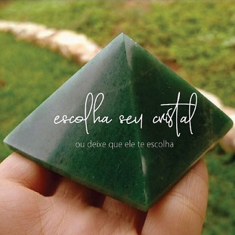

ESCOLHA SEU CRISTAL
Os cristais sempre chamaram atenção por sua beleza. No entanto, estes pequenos “objetos” carregam muito mais do que o encanto. Eles possuem uma estrutura atômica especial que é capaz de alterar a energia das pessoas e dos lugares ao seu redor. Ao entrarem em contato com estes, sintonizam-se com a frequência vibracional presente e gera trocas. Podem absorver, guardar e/ou emitir energias.
Cada cristal possui uma potencialidade diferente e por isso são utilizados como amuletos em sintonia com com diversos propósitos. Atuam no equilíbrio físico, vital, emocional, mental e espiritual.
Por isso é importante conhecer bem a energia de cada um deles para que possa aproveitá-la da melhor forma possível e nós queremos te ajudar a escolher o seu!